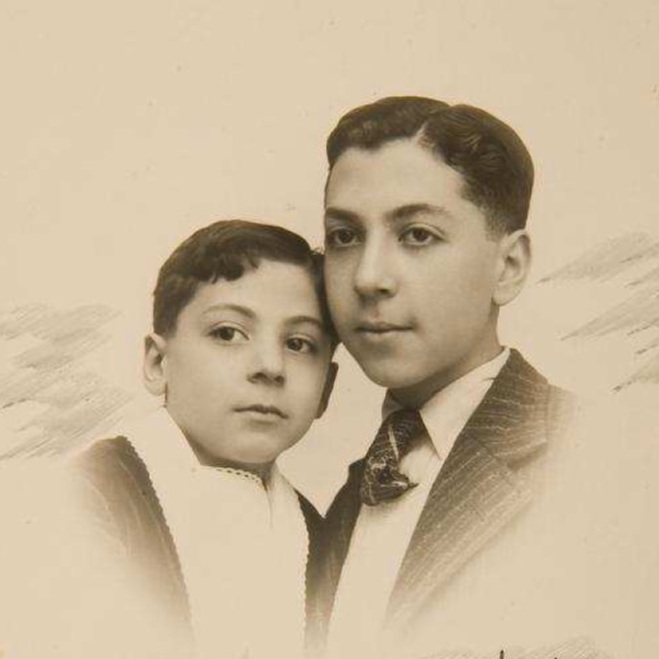

Portrait d’archive
Albert Pinhas
Albert PINHAS [alias Célestin Bellezza ?]
Albert PINHAS est né le 20/02/1930 à La Tronche en France.
Rassemblé à Lyon, il est déporté à Auschwitz le 13/04/1944 par le convoi n°71. Il est mort en déportation.
Déclaré officiellement "mort en déportation" au JO n°290 du 14/12/1997.
Dernière adresse connue : Avenue Emile Zola 69100 (Villeurbanne)
Nom : PINHAS
Prénom(s) : Albert
Date naissance : 20/02/1930
Âge (ans) : 14
Lieu naissance : La Tronche
Pays ou département : Isère
Lieu rassemblement : Lyon
Dernière adresse : Av. Emile Zola
Ville : Villeurbanne
Code postal : 69100
N° Convoi : 71
Date déportation : 13/04/1944
Informations diverses : Arrêté à Vic-sur-Cère le 1er mars 1944, Déporté seul.
Albert Pinhas est le fils de Boulissou Pinhas (née Crespini, le 25/12/1900 à Istanbul) foraine et de Haïm Pinhas (né probablement le 10/04/1898 à Andrinople, Turquie), marchand. Son frère ainé Sabeto (Sabataï) Pinhas est né le 05/09/1921 à Paris 11, au 15 rue Popincourt. Albert nait le 20/02/1930 à La Tronche en Isère. Après son divorce, leur mère Boulissou Crespini reprend son nom de naissance. Sabeto installé au 33 rue de l'Hôtel de Ville à Villeurbanne, travaille dans une bonneterie. Il se mariera à Villeurbanne en 1941 avec Jeanne Martel. Boulissou et son fils Albert habitent au au 129 Cours Emile Zola puis au 2 Rue Hippolyte Kahn à Villeurbanne.
Boulissou et ses deux fils sont arrêtés le 24 mars 1944 et internés à la prison de Montluc. Ils sont transférés ensemble au camp de transit de Drancy où ils sont enregistrés le 31 mars. Les deux garçons sont assignés à l’escalier 13, leur mère est assignée seule à l’escalier 19. Sélectionnés pour faire partie du convoi n°71, Albert, 14 ans et sa mère sont déportés le 13 avril. Séparé du reste de sa famille, Sabetaï Pinhas, 22 ans, est quant à lui déporté par le convoi n°73 du 15 mai 1944 à destination de camps en Estonie.
Pinhas (Albert), né le 20 février 1930 à La Tronche (Isère), décédé le 18 avril 1944 à Auschwitz (Pologne). (JO n°290 du 14/12/1997).
Pinhas, née Crespini (Boulissou) le 25 décembre 1900 à Constantinople (Turquie), décédée le 18 avril 1944 à Auschwitz (Pologne). Pinhas (Sabeto), né le 5 septembre 1921 à Paris (11e) (Seine), décédé entre le 15 mai et le 1er juillet 1946 en déportation.
Lieu de déportation : Auschwitz
Lieu de départ : Drancy
Nombre total de déporté·e·s du convoi : 1500
Gazé·e·s à l'arrivée : 1265 (84,3 %)
Survivant·e·s en 1945 : 128 (8,5 %)